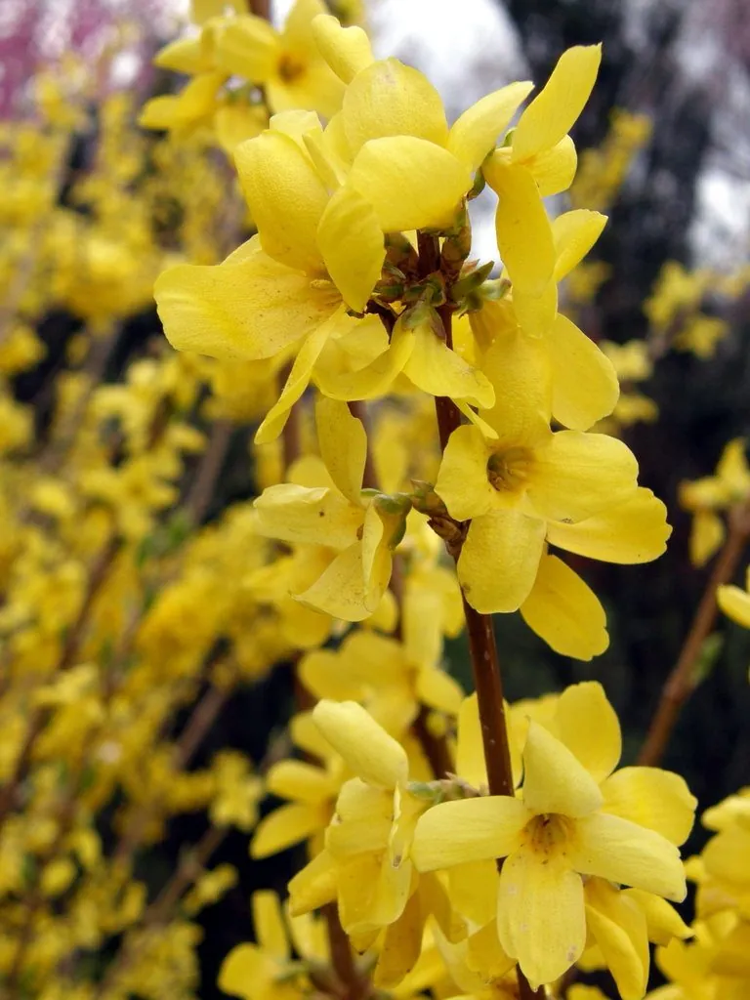

灌木与花木 · 植物界
连翘 Forsythia suspensa

早春开满金黄色花朵的落叶灌木，果实入药是清热解毒的常用中药，也是北方常见的观赏与绿篱植物。
- 分类
- 门被子植物门纲木兰纲目唇形目科木犀科属连翘属
- 栖息环境
- 海拔 500–2000 米的山坡灌丛、林缘与路旁，喜光耐寒耐旱
- 地理分布
- 中国华北、西北及长江流域各省，以山西、河南、陕西产量最多
- 保护级别
- 暂无评估；中国未列入国家重点保护野生植物名录
物种志
连翘为落叶灌木，高可达 3 m，枝条直立或开展，小枝黄褐色，髓部中空。叶片对生，单叶或 3 裂，卵形至长椭圆形，边缘具锯齿。花期 3–4 月，先花后叶，花单生或簇生于叶腋，花冠金黄色、4 裂，裂片长圆形，花径 2–3 cm；果实为蒴果，卵球形，表面具疣状突起，成熟时开裂，种子多数、具翅。
连翘原产中国华北、西北及长江流域，多生于海拔 500–2000 m 的山坡灌丛与林缘，喜光、耐寒、耐旱，对土壤要求不严，在干旱瘠薄的山区也能生长。早春满枝金黄，是北方城市重要的观花灌木；秋季果实由青转黄时采收，即为中药“连翘”，能清热解毒、散结消肿，是银翘解毒片等中成药的主要原料。连翘花期比迎春稍晚，两者常被混淆，但连翘枝条髓部中空、花冠裂片尖长。
形态与习性
- 株高可达 3 m，枝条髓部中空
- 花期3–4 月，先花后叶
- 果期7–9 月，蒴果表面具疣突
- 光照喜光，不耐庇荫
- 水分耐旱，怕积水
- 土壤适应性强，耐瘠薄
- 主要用途观赏与绿篱、果实入药
趣味知识
- 连翘的果实是中药“连翘”，能清热解毒，是银翘解毒片的主要原料。
- 连翘与迎春花期相近，但连翘枝条髓部中空、花冠裂片尖长，可以此区分。
- 连翘早春先花后叶，满枝金黄，是北方城市重要的春季观花灌木。
- 连翘耐干旱瘠薄，在北方山区常作为水土保持与荒山绿化树种。